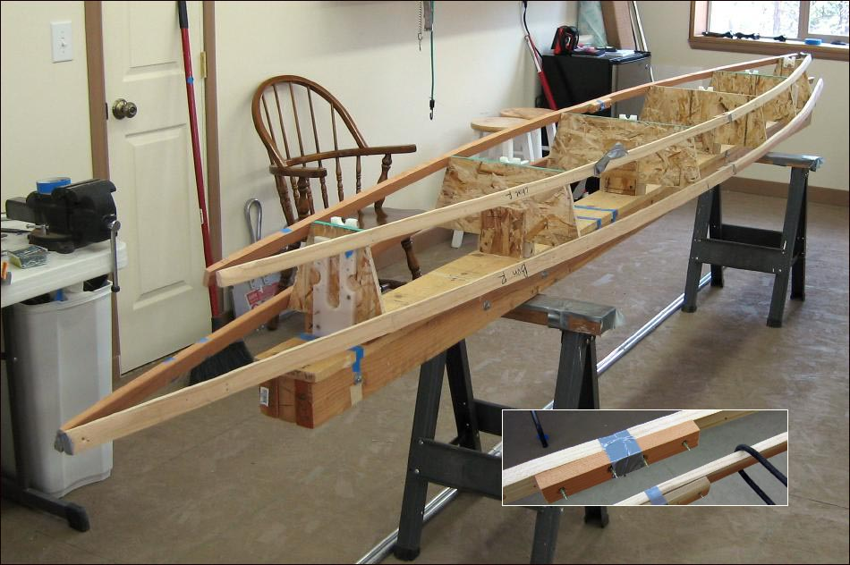

| Sonnet (Skinning Frame) | Menu Previous Page Next Page |
|

Attach the chines and gunwales to the stations with nails or screws. if the stringers are not full length, they can be joined by butting two sections together and wood screwing a plate to the inside face as seen above. Start at the center and work forward and back alternatively when attaching the stringers. Allow the ends to naturally come together and then cut them off where they intersect and tape or screw them together. Final length will be determined later by the sponson sleeve length and the the slope of the aluminum stems.
|
|